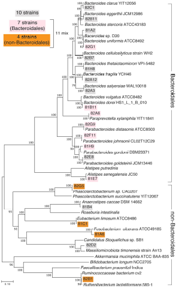

A simple case study
Imagine you want to derive for a list of microbial strains of interest a list of files where the functional information for each microbe in your input list is stored in a computer readable format.
Sometime interesting group of micropbial strains are depicted in one of the Figures of the associated publication.
Here an example! The tree of microbial strains depicted in the Figure is taken from
Tanoue, Takeshi, et al.
“A Defined Commensal Consortium Elicits CD8 T Cells and Anti-Cancer Immunity.”
Nature, vol. 565, no. 7741, Jan. 2019, pp. 600–05.
www.nature.com, https://doi.org/10.1038/s41586-019-0878-z.

The only strain-safe model at NCBI
Assembly accession is the true primary key for strain proteomes. TaxID is metadata, not an identifier.
Strain name └── BioSample └── BioProject └── Assembly (GCF_ / GCA_) └── Proteome (protein FASTA)